第03讲 从三个方向看物体的形状
第03讲 从三个方向看物体的形状

课程标准 | 学习目标 |
①掌握从三方向看几何体； ②会画从三方向看几何体。 | 初步体会从三个方向看同一物体时可能看到不同的图形，能识别简单物体的从正面看、从左边看、从上面看； 会画立方体极其简单组合体的三种平面图形； |


知识点01 从三个方向看物体的形状
一般是从以下三个方向：(1)从正面看；(2)从左面看；(3)从上面看．（如下图）

【即学即练1】
1．（2024·重庆九龙坡·三模）如图，下列几何体由5个大小相同的正方体组成，从上面看到该几何体的形状图是（ ）

A． B．
B．
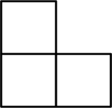
C．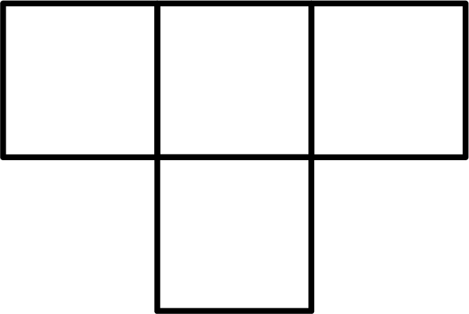
D．
【答案】C
【分析】本题主要考查从不同方向看几何体，解题的关机是熟知几何体的特征；由几何体的特征可直接进行求解．
【详解】
解：从上面看到该几何体的形状图是；
故选C．
2．（2024·内蒙古呼和浩特·模拟预测）小明自己动手做了一个数学模型，从正面、左面、上面观察它，得到的三视图如图所示，则该模型的形状是（ ）

A．圆锥 B．圆柱 C．三棱柱 D．三棱锥
【答案】A
【分析】本题考查从不同方向看．由从正面、左面看可得此几何体为锥体，根据从上面看是圆及圆心可判断出此几何体为圆锥．
【详解】解：∵从正面、左面看都是三角形，
∴此几何体为锥体，
∵从上面看是一个圆及圆心，
∴此几何体为圆锥，
故选A．

题型一 从不同方向看简单几何体的形状
【典例1】（2023·贵州·模拟预测）下面几何体中，从上面看，得到的平面图形为圆的是（ ）
A．
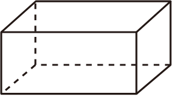
B． C．
C． D．
D．
【答案】D
【分析】本题主要考查的是从不同方向看几何体，具备一定的空间想象能力是解题的关键；根据从上面看到的图形，逐项判定即可．
【详解】解：A、长方体从上面观察得到的平面图形是矩形，故此选项不符合题意；
B、从上面观察得到的平面图形是三角形，故此选项不符合题意；
C、从上面观察得到的平面图形是正方形，故此选项不符合题意；
D、球从上面观察得到的平面图形是圆，故此选项符合题意；
故选：D．
【变式1】（23-24七年级上·贵州毕节·阶段练习）在下列的四个几何体中，其中从正面看与从上面看所得的平面图相同的是（ ）
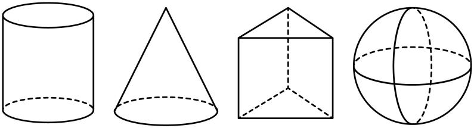
A．圆柱 B．圆锥 C．三棱柱 D．球
【答案】D
【分析】本题考查几何体三视图．根据题意逐一对选项进行分析即可得到本题答案．
【详解】解：∵圆柱从正面看是四边形，从上边看是圆，平面图不同，
∵圆锥从正面看是三角形，从上边看是带圆心的圆，平面图不同，
∵三棱柱从正面看是四边形，从上边看是三角形，平面图不同，
∵球从正面看是圆，从上边看是圆，平面图相同，
故选：D．
【变式2】（23-24七年级上·山西临汾·阶段练习）如图所示的几何体从正面看到的图是（ ）

A．
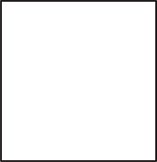
B． C．
C．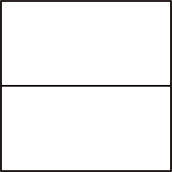
D．
【答案】D
【分析】本题考查了三视图的知识，主视图是从物体的正面看得到的视图．
找到从正面看所得到的图形即可，注意所有的看到的棱都应表现在主视图中．
【详解】解：从正面看到的图形应该是有长方形和半圆形，且长方形的长比半圆的直径大，
故选：D．
【变式3】（23-24七年级上·吉林白山·阶段练习）如图，一个圆柱体切去一部分，则从上面看到的图形是（ ）
 A．
A． B．
B．
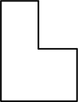
C．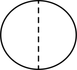
D．
【答案】A
【分析】本题主要考查从不同方向看几何体，熟练掌握几何体的特征是解题的关键．根据几何体的特征及从不同方向看到的平面图形可直接进行求解．
【详解】解：由题意可知该几何体从上面看到的图形符合A选项；
故选：A．
题型二 从不同方向看简单组合体的形状
【典例1】（23-24九年级下·河南驻马店·阶段练习）如图桌上摆放这一个茶杯和一摞书，从上面看到的图形是（ ）

A．
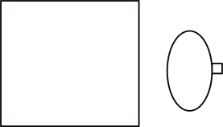
B．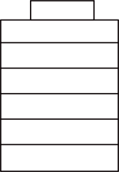
C．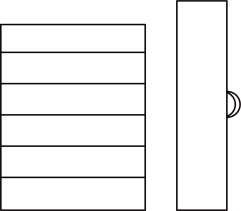
D．
【答案】A
【分析】本题考查了从三个不同方向看几何体，解题关键是根据题意看图，不要搞错方向．
【详解】解：书和茶杯从上面看到的图形的分别是长方形和圆，
故选：A．
【变式1】（23-24九年级下·广东深圳·开学考试）作为中国非物质文化遗产之一的紫砂壶，成型工艺特别，造型式样丰富，陶器色泽古朴典雅，从一个方面鲜明地反映了中华民族造型审美意识．如图是一把做工精湛的紫砂壶“景舟石瓢”，下面四幅图是从上面看到的图形的是（ ）

A．
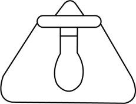
B．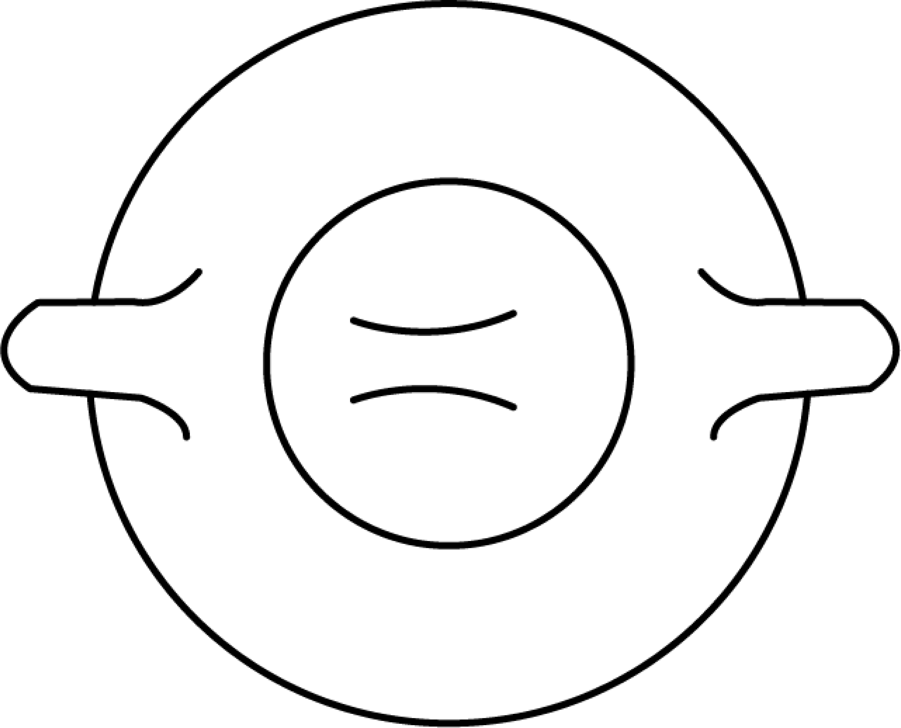
C．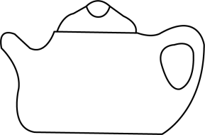
D．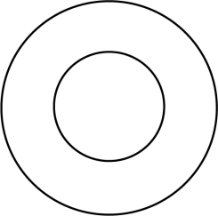
【答案】B
【分析】本题主要考查了三视图的知识，准确把握从正面、左面和上面三个方向看立体图形得到的平面图形是解决问题的关键．从正面、左面和上面三个方向看立体图形得到的平面图形，注意所有的看到的或看不到的棱都应表现在视图中，看得见的用实线，看不见的用虚线，虚实重合用实线．
【详解】解：从上面看，得到的图形是
故选：B．
【变式2】（23-24七年级上·贵州黔南·期末）如图所示为两只水平摆放的水杯，从上面看到的图象为( )
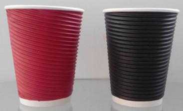
A． B．
B．
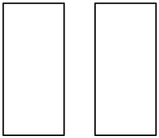
C． D．
D．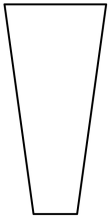
【答案】A
【分析】找到从上面看所得到的图形即可．
本题考查了从不同方向看几何体，解题的关键在于掌握观察从上面看几何体的方法．
【详解】解：从上面看可得到两个圆，
故选：A．
【变式3】（23-24九年级上·陕西西安·期末）如图所示的几何体，从上面看到的形状图是（ ）

A． B． C． D．
C． D．
【答案】B
【分析】本题考查了简单组合体的三视图，从上面看得到的图形是俯视图．
根据从上面看得到的图形是俯视图，可得答案．
【详解】解：从上面看，可得选项B的图形．
故选：B．
题型三 画出从不同方向看几何体的平面图形
【典例1】 （23-24七年级下·陕西西安·开学考试）从正面、左面、上面三个方向看该立体图形，分别画出看到的平面图形．
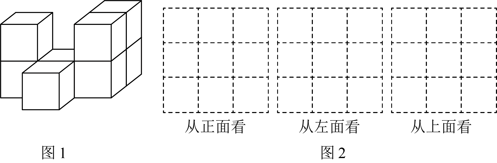
【答案】见解析
【分析】考查了作图三视图．从正面看：共有3列，从左往右分别有2，1，2个小正方形；从左面看：共有3列，从左往右分别有1，2，1个小正方形；从上面看：共分3列，从左往右分别有1，2，2个小正方形．据此可画出图形．
【详解】解：如图所示，
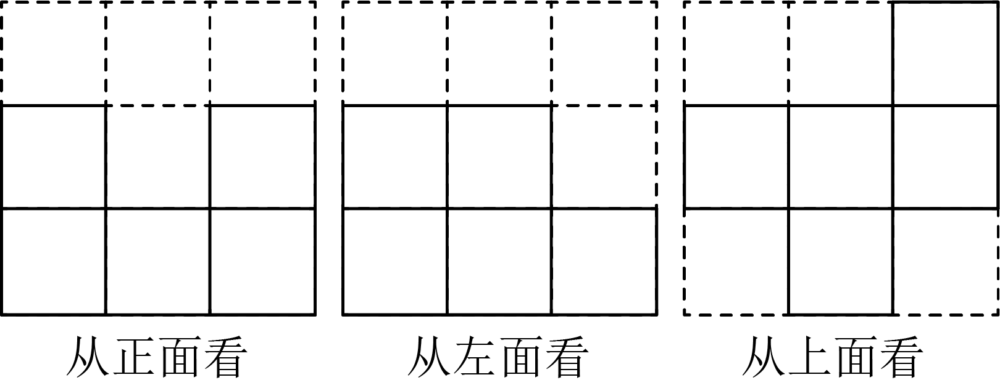
【变式1】（23-24七年级上·广东佛山·阶段练习）如图，请分别画出从正面、左面和上面观察该几何体看到的形状图．

【答案】见解析
【分析】
本题考查了从不同方向看几何体．在画图时一定要将物体的边缘、棱、顶点都体现出来，看得见的轮廓线都画成实线，看不见的画成虚线，不能漏掉．根据从不同方向看到的结果画图即可．
【详解】解：如图所示：
【变式2】（23-24七年级上·甘肃张掖·阶段练习）如图是由9个小立方块搭成的几何体，请画出从正面、左面、上面看到的几何体的形状图．
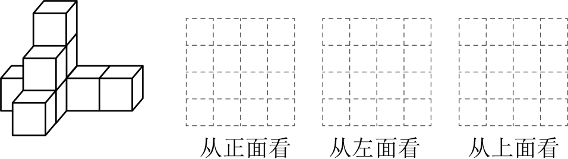
【答案】见解析
【分析】本题主要考查了从不同的方向看几何体，根据所给的几何体，分别画出对应的从正面、左面、上面看到的几何体的形状图即可．
【详解】解：如图所示，即为所求．
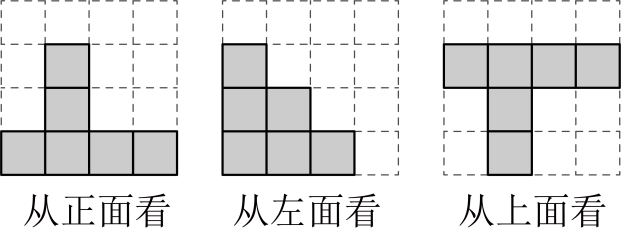
【变式3】（23-24七年级上·贵州毕节·阶段练习）如图，在平整的地面上，用多小正方体堆成一个几何体．
请你画出从正面、左面和上面观察该几何体看到的形状图．
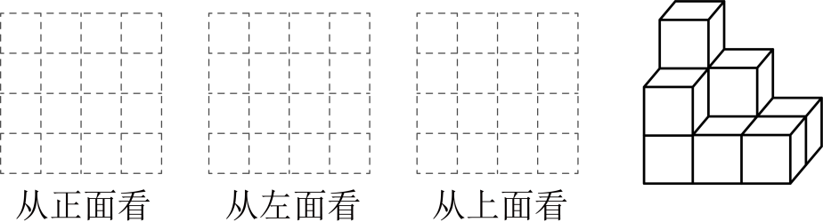
【答案】见解析
【分析】本题主要考查了从不同的方向看几何体，从正面看，分为上、中、下三层，下面一层有3个并排的小正方形，中间一层有2个并排的正方形，与下面的正方形左边对齐，上面一层最左边有一个小正方形；从左面看，分为上、中、下两层，下面一层有2个并排的小正方形，中间一层有2个并排的正方形，上面一层最左边有一个小正方形；从上面看有两行，上面一行有3个并排的正方形，下面一行有3个并排的正方形，据此画图即可．
【详解】解：如图所示：
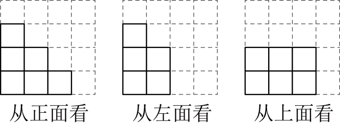
题型四 由形状图判断几何体并求几何体的表面积和体积
【典例1】（23-24六年级上·山东淄博·期末）如图，这是某工厂车床工作间某工件的从三个方向看到的图形，工人借助直尺测量了部分长度，根据图中数据求该工件的体积．

【答案】该工件的体积是
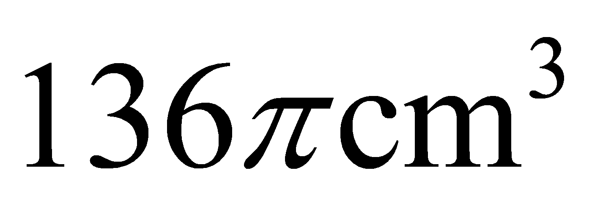
．【分析】本题考查了从不同方向看到的几何体和圆柱的计算．根据从不同方向看到的几何体可知该几何体是两个圆柱体叠加在一起，体积是两个圆柱体的体积的和．
【详解】解：根据三视图可知该几何体是两个圆柱体叠加在一起，
底面直径分别是 和
和 ，高分别是和
，高分别是和 ，
，
∴体积为：
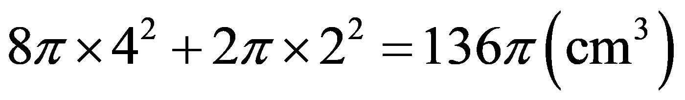
．答：该工件的体积是．
【变式1】（23-24七年级上·山西太原·阶段练习）一个长方体从左面、上面看到的平面图形如图所示（单位： ），则该长方体的体积是
），则该长方体的体积是
 ．
．

【答案】
【分析】本题主要考查从不同方向看几何体，关键是根据从左面、从上面看到的形状图的相关数据得出从正面看到的形状图是长为5宽为2的长方形．从上面、左面知，长方体的长为 ，宽为
，宽为 ，高为
，高为
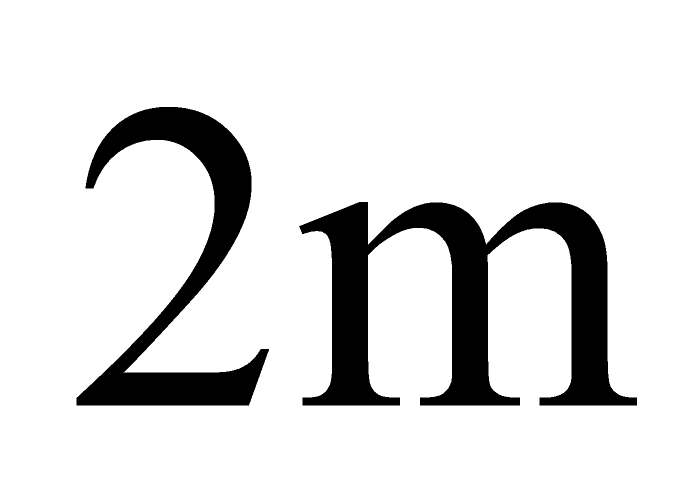
，根据长方体的体积公式即可得．【详解】解：根据从左面、从上面看到的形状图的相关数据可得：
长方体的长为，宽为，高为，
所以该长方体的体积是
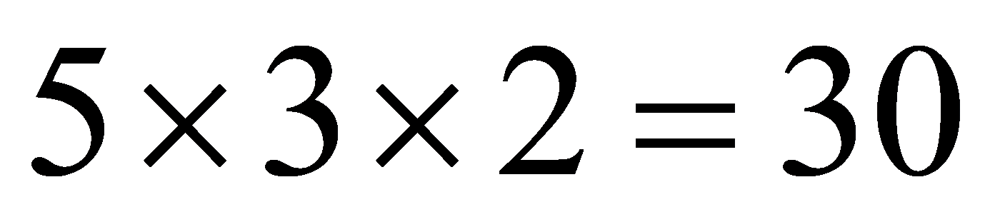
（）．故答案为：．
【变式2】（2023春·江西鹰潭·七年级统考期中）超市货架上摆放着某品牌红烧牛肉方便面，如图是从三个方向看得到的形状图，则货架上该方便面至少有 盒．

【答案】9
【分析】根据题意得第一层有4桶，第二层最少有3桶，第三层有2桶，即可得至少共有9桶．
【详解】解：根据题意得第一层有4桶，第二层最少有3桶，第三层有2桶，
所以至少共有9桶．
故答案为：9．
【点睛】本题考查了从不同方向看几何体，解题的关键是理解题意．
【变式3】（23-24七年级上·广东佛山·阶段练习）如图所示的是从不同方向观察一个几何体得到的形状图

从正面看 从左面看 从上面看
(1)这个几何体的名称是______；
(2)由图中数据计算此几何体的侧面积（结果保留 ）
）
(3)画出该几何体的大致展开图．
【答案】(1)圆柱
(2)
(3)见解析
【分析】
本题考查了从不同方向看几何体，以及几何体的展开图，理解圆柱的特征是解答本题的关键．
（1）根据从不同方向看到的图形判断即可；
（2）根据圆柱的侧面积公式计算即可；
（3）根据圆柱的特征画出展开图即可．
【详解】（1）由从不同方向看到的形状可知该几何体是圆柱．
故答案为：圆柱；
（2）由图可知，圆柱体的底面直径为2，高为3，
所以侧面积
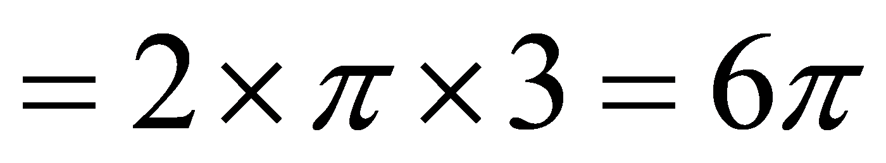
．（3）如图，
题型五 根据从不同方向看到的图形确定几何体的个数
【典例1】（23-24七年级上·江西吉安·阶段练习）如图1，在平整的地面上，用8个棱长都为1cm的小正方体堆成一个几何体．
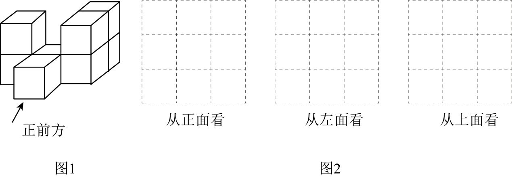
(1)请利用图2中的网格画出这个几何体从正面看、从左面看和从上面看到的形状图（一个网格为小立方体的一个面）．
(2)图1中8个小正方体搭成的几何体的表面积（包括与地面接触的部分）是 cm2．
【答案】(1)见解析
(2)32
【分析】此题考查了不同方向看几何体所得的形状图，解题的关键是确定几何体在不同方向上的形状图．
（1）根据正面、左面和上面三个方向看几何体的形状，画图即可；
（2）分前后，左右，上下三个方向统计正方形的个数即可．
【详解】（1）解：从正面看、从左面看和从上面看到的形状图如图所示：
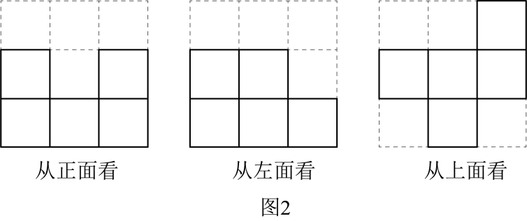
；（2）解：表面积
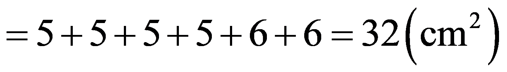
．故答案为：32．
【变式1】（23-24六年级上·山东烟台·期中）如图所示是由几个小立方体所组成几何体的俯视图，小正方形中的数字表示在该位置的小立方体的个数．

(1)请在下面的网格中画出这个几何体从正面和从左面看到的图形；
(2)若小立方体的棱长为 ，求该几何体的表面积．
，求该几何体的表面积．
【答案】(1)见解析
(2)
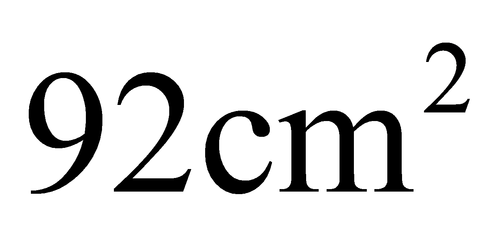
【分析】本题考查了从不同方向看几何体，考查了学生的空间想象能力．
（1）根据从正面和从左面看到的形状画出相应的图形即可；
（2）根据表面积的计算方法求解即可．
【详解】（1）如图所示：
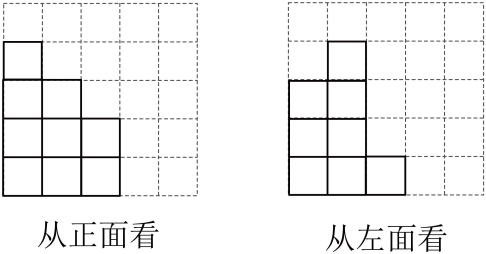
（2）表面积为：
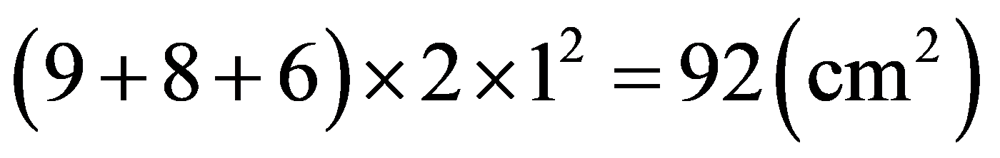
．故该几何体的表面积是．
【变式2】（23-24七年级上·贵州毕节·期末）用相同的小立方块搭一个几何体，从正面、上面看到的形状图如图所示，从上面看到的形状图中小正方形中的字母表示在该位置上小立方块的个数，请回答下列问题：

(1)填空：
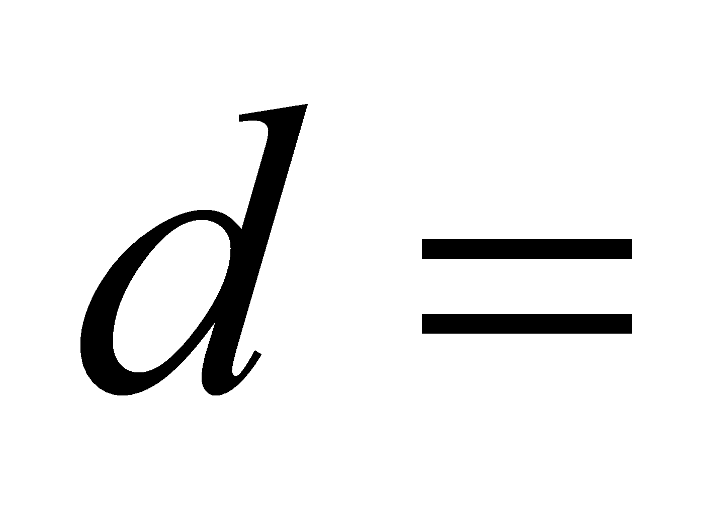
__________， __________．
__________．(2)请在如图的网格中画出当 ，
， 时这个几何体从左面看到的形状图．
时这个几何体从左面看到的形状图．
(3)这个几何体最少由多少个小立方块搭成？最多由多少个小立方块搭成？
【答案】(1)3；1
(2)见解析
(3)最少由9个小立方块搭成，最多由11个小立方块搭成
【分析】本题考查从不同位置看简单组合体．
（1）结合从正面、上面看到的形状图可得答案；
（2）根据左视图的定义画图即可；
（3）由从正面、上面看到的形状图可知，
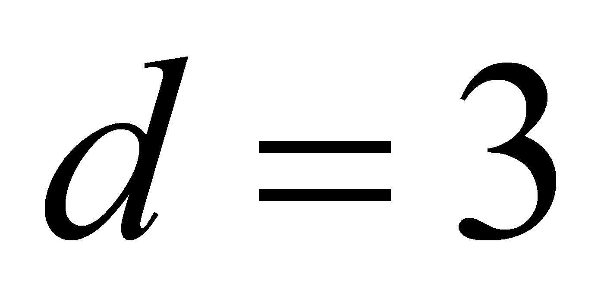
，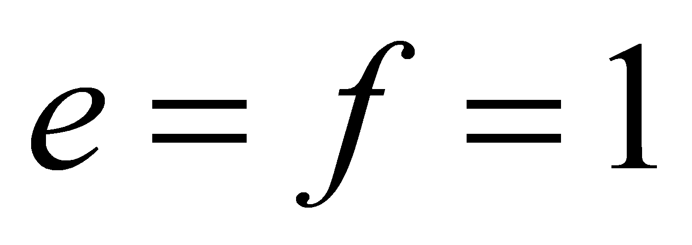
， ，
， ，
， 的最大值为2，且至少有一个是2，由此可得答案．
的最大值为2，且至少有一个是2，由此可得答案．【详解】（1）解：结合从正面、上面看到的形状图可知，，
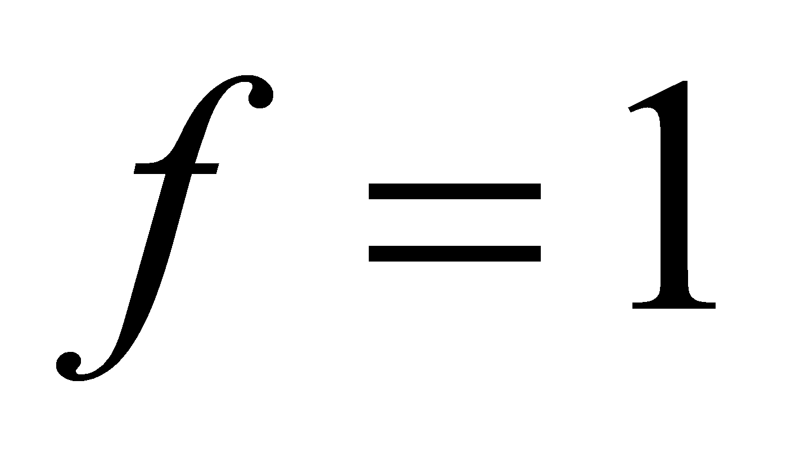
．故答案为：3；1．
（2）解：如图所示．
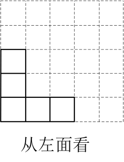
（3）解：根据题意得：
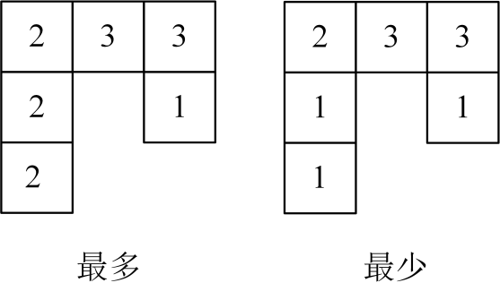
则最多时，
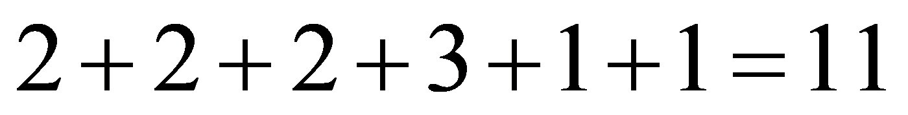
（个），最少时，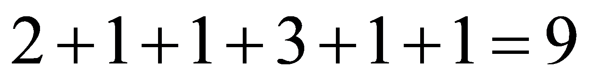
（个），答：这个几何体最少由9个小立方块搭成，最多由11个小立方块搭成．
【变式3】（23-24七年级上·贵州贵阳·期中）一个几何体由若干大小相同的小立方块搭成，下图分别是从它的正面、上面看到的形状图．

(1)该几何体至少是______块小立方块搭成的；
(2)该几何体最多是用______块小立方块搭成的；
(3)当搭成该几何体的小立方块最多时，画出从左面看到的几何体的形状图．
【答案】(1)6
(2)8
(3)见解析
【分析】本题考查了从不同的方向看几何体，由从正面和从上面想象几何体的形状，解题的关键是综合起来考虑整体形状．
（1）根据从正面看到的图可得，从上面看到的图中左边一列中至少一处有2层，进行解答即可；
（2）根据从正面看到的图可得，从上面看到的图中左边一列中最多3处有2层，由此即可判断；
（2）根据从左面看到的正方形个数进行解答即可．
【详解】（1）解：根据从正面看到的图可得，从上面看到的图中左边一列中至少一处有2层，
∴该几何体至少是用 个小立方块搭成的，
个小立方块搭成的，
故答案为：6．
（2）解：根据从正面看到的图可得，从上面看到的图中左边一列中最多3处有2层，
∴该几何体最多是用 个小立方块搭成的，
个小立方块搭成的，
故答案为：8．
（3）解：从左面看到的几何体的形状图，如图所示：
题型六 根据从上面看到的图形确定几何体的形状
【典例1】 （23-24七年级上·山西太原·阶段练习）一个几何体是由大小相同的小立方块搭成，其中小正方形上的数字表示在该位置上的小立方块的个数，请画出从正面和从左面看到的这个几何体的形状图．
【答案】见解析
【分析】本题主要考查了从不同方向看几何体，根据各行、各列对应的立方体的个数画正面看，左面看的图形即可．
【详解】解：从正面和从左面看到的这个几何体的形状图如图所示：
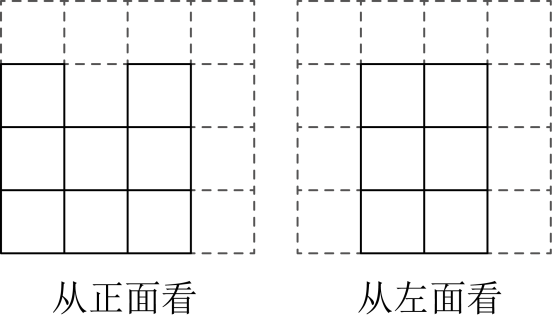
【变式1】（23-24七年级下·黑龙江大庆·开学考试）如图是由小正方体组成的立体图的俯视图，数字表示小正方体的个数，请画出从正面看和从左面看该立体图的图形．

【答案】见解析
【分析】本题考查几何体从不同方向看的图的画法．由几何体的俯视图及小正方形内的数字，可知从正面看的图的列数与俯视图的列数相同，且每列小正方形数目为俯视图中该列小正方形数字中的最大数字．从左面看的图的列数与俯视图的行数相同，且每列小正方形数目为俯视图中相应行中正方形数字中的最大数字．由已知条件可知，从正面看的图有3列，每列小正方数形数目分别为3，2，1；从左面看的图有3列，每列小正方形数目分别为3，3,2．据此可画出图形．
【详解】解：如图所示：
【变式2】（23-24七年级上·广东佛山·阶段练习）如图，这是一个由小正方体搭成的几何体从上面看得到的平面图形，小正方形中的数字表示该位置的小正方体的个数，请你画出它从正面看与从左而看到的形状图．

【答案】见详解
【分析】本题主要考查了三视图的知识，熟练掌握三视图的定义是解题关键．由已知条件可知，从正面看有3列，从左到右小正方形的数目分别为3，2，1；从左面看有3列，从左到右小正方形的数目分别为1，3，2，据此可画出图形．
【详解】解：从正面看与从左而看到的形状图，如下图所示：
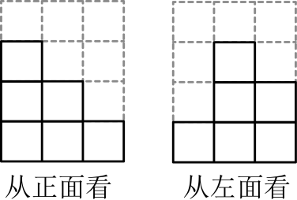
【变式3】用 个相同的小立方块搭成几何体．从上面看到的几何体的形状图如图
个相同的小立方块搭成几何体．从上面看到的几何体的形状图如图 所示．其中小正方形中的数字表示在该位置的小立方块的个数．
所示．其中小正方形中的数字表示在该位置的小立方块的个数．

(1)请在图 中画出从正面和左面看到的这个几何体的形状图；
中画出从正面和左面看到的这个几何体的形状图；
(2)如果现在你还有一些大小相同的小立方块，要求保持从正面和左面看到的形状图都不变，最多可以再添加 个小立方块．
【答案】(1)见解析
(2)
【分析】本题考查从不同方向看几何体．由从上面看的几何体及小正方形内的数字，可知从正面看的列数与从上面看的列数相同，且每列小正方形数目为从上面看中该列小正方形数字中的最大数字．从左面看的列数与从上面看的行数相同，且每列小正方形数目为从上面看中相应行中正方形数字中的最大数字．
（1）由已知条件可知，从正面看有列，每列小正方数形数目分别为，，；从左面看有列，每列小正方形数目分别为，
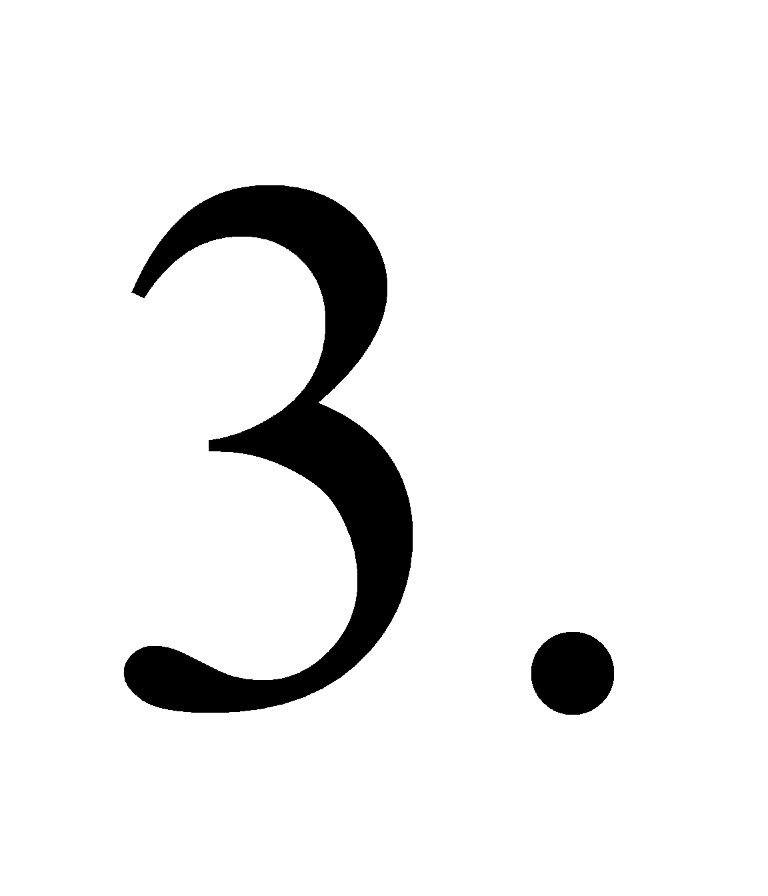
据此可画出图形；（2）根据从正面看和从左面看的定义可得答案．
【详解】（1）解：如图所示：
（2）如图所示：
如果现在你还有一些大小相同的小立方块，要求保持从正面和上面看到的形状图都不变，最多可以再添加个小立方块．
故答案为：．
题型七 根据从不同方向看到的形状图确定几何体的可能情况
【典例1】（23-24七年级上·四川成都·期末）一个几何体由若干大小相同的小立方块搭成，下图分别是从正面、上面看到的形状图，则搭成这个几何体的小立方块最多有 个．
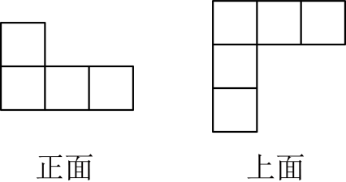
【答案】8
【分析】本题考查从不同方向看几何体，根据从上面看确定位置，正面看确定个数，进行求解即可．
【详解】解：如图：
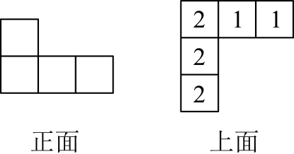
搭成这个几何体的小立方块最多有
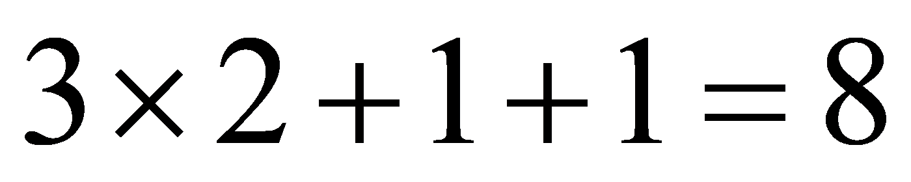
；故答案为：8．
【变式1】（22-23七年级上·四川成都·期中）由若干相同大小的小正方体组成的几何体，从不同方向看到的图形如图所示，则组成该几何体最多需要小正方体个数为 ．
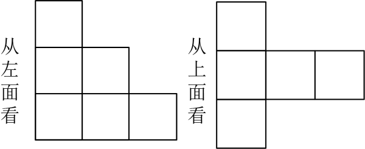
【答案】10
【分析】本题考查了从不同方向看几何体，解题的关键是确定从不同方向看到的平面图形，属于中考常考题型．根据从左边看到的图形把各个位置上正方体最多的数量填在从上面看的图形中，再求和即可．
【详解】解：如图，成该几何体最多需要小正方体个数．
故答案为：10．
【变式2】（23-24六年级上·山东威海·期末）一个几何体由若干个大小相同的小立方块搭成，右图是从正面、上面看到的形状图，组成这个几何体最多需要 个小正方体．

【答案】11
【分析】本题考查的是从不同方向看小正方体堆砌图形，同时也体现了对空间想象能力方面的考查．根据从上面看到的小正方体的分布，再结合从正面看到的图形可得答案．
【详解】解：组成这个几何体最多需要的小正方体的情况如下图所示：
则小正方体的个数最多为，
故答案为：．
【变式3】（23-24七年级上·河南驻马店·期末）一个几何体由若干个大小相同的小立方块搭成，如图分别是从它的正面、左面和上面看到的形状图，该几何体至少是用 个小立方块搭成的．

【答案】5
【分析】本题考查了由不同方向看判断几何体，体现了对空间想象力的考查．根据题意可以得到该几何体从正面和上面看至少有多少个小立方体，综合考虑即可解答本题．
【详解】解：根据题意，得
∴该几何体至少用5个小立方块搭成的．
故答案为：5．

一、单选题
1．（2024·黑龙江绥化·三模）圆柱如图摆放，则从正面观察这个几何体得到的平面图形是（ ）
A． B． C． D．
【答案】B
【分析】本题考查了从不同方向看几何体，属于基础题．根据从正面观察得到的图形即可得到答案．
【详解】解：由图可知，这个圆柱从正面看得到的平面图形是
故选：B．
2．（23-24六年级下·黑龙江哈尔滨·期中）如图所示，下面简单几何体从正面看到的平面图形是（ ）

A． B． C．
B． C． D．
D．
【答案】C
【分析】本题考查从不同的方向看几何体的知识．熟练掌握从不同的方向看几何体是解题关键，逐项判断即可．
【详解】解：A、B、D均不是从正面看到的平面图形，不符合题意；
C、从正面看到的平面图形，此项符合题意；
故选：C．
3．（23-24六年级下·全国·假期作业）如图中4个立体图形，从左面看到的平面图形是四边形的有（ ）
A．1个 B．2个 C．3个 D．4个
【答案】C
【分析】本题考查简单几何体的三视图，掌握左视图是从左边看到的图形即可．
【详解】从左面看图（1）（2）（4）所示的立体图形，得到的平面图形都是四边形；从左面看图（3）所示的立体图形，得到的平面图形是三角形．
故选：C．
4．（23-24七年级上·广东佛山·阶段练习）如图，用小立方体搭一个几何体，从左面和上面看如图所示，这样的几何体它最多需要（ ）块小立方体

A．8 B．7 C．6 D．5
【答案】A
【分析】
此题考查了从不同方向看几何体，根据从左面看得到的图形可知这个几何体共有2层，再结合从上面看得到的图形即可得出答案．
【详解】解：最多分布个数如下所示，共需8块．
故选A．
5．（23-24七年级上·福建厦门·开学考试）在棋盘上叠一些中国象棋棋子，从上面、左面、正面看到的图形如图，这些棋子共有（ ）个．
A．12 B．11 C．8 D．7
【答案】C
【分析】本题考查的是从不同方向看几何体，根据从三个不同方向看到的平面图形可得答案．
【详解】解：由上面看可得：棋子共有3个，
结合左面、正面看到的图形，
这些棋子共有（个），
故选：C．
二、填空题
6．（22-23七年级上·辽宁盘锦·期末）如果一个立体图形的从三个不同方向（正面、左面、上面）看到的平面图形均是一样的图形，则该立体图形是 ．
【答案】球体或正方体/正方体或球体
【分析】本题考查的是三视图的基本知识，明确各个几何体的三视图是解题关键．根据题意判断图形即可．
【详解】解：由题意可知，立体图形是球体或正方体，
故答案为：球体或正方体．
7．（22-23七年级上·安徽淮南·开学考试）下图中的三个物体，它们都是由相同的小立方体搭成的．从( )看，看到的形状是完全相同的．
【答案】上
【分析】分别从3个立体图形的正面、上面、侧面观看，找到其中形状是完全一样的即可．
【详解】解：根据观察可知三个立体图形的从上面看，看到的形状是完全相同的，
故答案为：上．
【点睛】本题考查从不同方向观察物体和几何图形，关键是考查学生的观察能力．
8．（23-24六年级上·山东威海·期中）一个几何体由几个大小相同的小立方块搭成，从上面观察这个几何体，看到的形状如图所示，其中小正方形中的数字表示在该位置的小立方块的个数．若小立方块的棱长为2，则这个几何体的表面积是 ．
【答案】120
【分析】本题考查了从不同方向看几何体，解题的关键是读懂图象信息，灵活运用所学知识解决问题．根据几何体的特征求出表面积即可．
【详解】解：这个几何体的表面积．
故答案为：120．
9．（23-24七年级上·河南郑州·阶段练习）如图是由棱长相等的小立方体摆成的几何体从正面看与从上面看到的形状图，根据图形可以判断组成这个几何体最多要 个小立方块，最少要 个小立方块．

【答案】 16 10
【分析】本题考查了由从不同方向看到的形状图来判断最多或最少得正方体的个数，由从上面看到的形状图可以判断底面小正方体的个数，由正面看到的形状图可以判断第二层和第三层小正方体的个数，进而计算作答即可．
【详解】由从上面看到的形状图可知，组成这个几何体的底面小正方体有7个，
由从正面看到的形状图可知，第二层最少有2个，最多有6个；第三层最少有1个，最多有3个，
∴组成这个几何体最多要个小立方块，最少要个小立方块，
故答案为：16，10．
10．（23-24七年级上·河北廊坊·期末）如图，这是由6个棱长为 的小正方体拼成的一个几何体．
的小正方体拼成的一个几何体．
（1）则该几何体从正面看到的图形的面积为  ．
．
（2）将小正方体①移走后，所得几何体从 看不变．（填“正面”“左面”或“上面”）
【答案】 4 左面
【分析】本题考查从不同方向看立体图形．
（1）求出该几何体从前面看到的正方形个数，即可求出其面积；
（2）将小正方体①移走后，从左面看到的几何体的形状不变．
【详解】解：（1）该几何体从前面看到有4个正方形，一个正方形的面积为，
∴几何体从正面看到的图形的面积为；
故答案为：4；
（2）将小正方体①移走后，所得几何体从左面看不变．
故答案为：左面．
三、解答题
11．（23-24七年级上·贵州贵阳·期中）从正面、左面、上面观察如图所示的几何体，分别画出你所看到的形状图．
【答案】见解析
【分析】本题考查了从不同方向观察几何体，锻炼了学生的空间想象力和抽象思维能力．从正面看、左面看、上面看到的行、列上各有几个小立方体，然后画出相应的图即可．
【详解】解：从正面看：共有3列，从左往右分别有3，1，2个小正方形；
从左面看：共有2列，左面一列有3个，右边一列有1个小正方形；
从上面看：共分3列，左面一列有2个，中间一列2个，右边一列靠上方有1个小正方形．如图所示：
12．（23-24七年级下·陕西榆林·开学考试）用若干个大小相同的小立方块搭一个几何体，使得从正面和从上面看到的这个几何体的形状图如图所示.请画出所有的从左面看到的这个几何体的形状图.
【答案】见解析
【分析】本题考查了从不同方向看几何体．由几何体从正面看的图形，可知从正面看到的图形的列数与左面看到的列数相同，行数相同，然后分情况画出从左面看到的图形即可．
【详解】解：作图如下：
13．（23-24七年级上·陕西西安·期中）已知一个“粮仓”从不同方向看的图形如图所示（单位： ），根据图中所给的数据求出它的容积．（参考公式：
），根据图中所给的数据求出它的容积．（参考公式： ，
， ，结果保留
，结果保留 ）
）

【答案】
【分析】本题主要考查了从不的方向看几何体所得出的图形，圆锥和圆柱的体积公式，解题的关键是根据三视图得出几何体的形状．
【详解】解：观察发现该几何体为圆锥和圆柱的结合体，
其体积为：
，
答：这个几何体的体积为．
14．（22-23七年级上·河南郑州·期末）如图是由 个相同的小立方体组成的几何体．
个相同的小立方体组成的几何体．
(1)请画出从正面看，从左面看，从上面看的平面图形；
(2)现量得小立方体的棱长为 ，现要给该几何体表面涂色（不含底面），求涂上颜色部分的总面积．
，现要给该几何体表面涂色（不含底面），求涂上颜色部分的总面积．
【答案】(1)见解析
(2)平方厘米
【分析】此题主要考查了从不同方向看几何体，以及求几何体的表面积，关键是在画图时一定要将物体的边缘、棱、顶点都体现出来，看得见的轮廓线都画成实线，看不见的画成虚线，不能漏掉．
（1）分别画出从正面看、左面看、上面看的图形，注意所看到的棱都要表示到图中；
（2）数出每个小正方体所需要涂色的面的个数，再求和即需要涂颜色的面的总数，然后计算出总面积即可．
【详解】（1）解：如图所示：
（2）涂上颜色部分的总面积：（平方厘米）．
答：涂上颜色部分的总面积是平方厘米．
15．（22-23九年级上·河北唐山·期末）从不同方向观察一个几何体，所得的平面图形如图所示，

(1)写出这个几何体的名称：______；
(2)求这个几何体的侧面积和体积．（结果保留）
【答案】(1)圆柱
(2)圆柱的侧面积为，圆柱的体积为
【分析】本题考查从不同方向看几何体，圆柱的侧面积和体积．
（1）根据从不同方向看几何体的图形，判断即可；
（2）圆柱的侧面积＝底面圆的周长×高；圆柱的体积＝底面圆的面积×高．
【详解】（1）解：依题意，根据三视图，知道这个几何体是圆柱；
（2）解：依题意，底面半径为，高为3，
∴圆柱的侧面积
∴圆柱的体积 ．
．
16．（23-24七年级上·山东青岛·阶段练习）一个物体是由棱长为 的正方体模型堆砌而成的，其从不同方向看到的形状图如图所示：
的正方体模型堆砌而成的，其从不同方向看到的形状图如图所示：

(1)请在从上面看到的形状图上上标出小正方体的个数；
(2)求该几何体的体积；
(3)求该几何体的表面积．
【答案】(1)图见解析
(2)该物体的体积是
(3)该几何体的表面积是
【分析】
本题考查由三视图想象立体图形，做这类题时要借助三种视图表示物体的特点，从主视图上弄清物体的上下和左右形状；从俯视图上弄清物体的左右和前后形状；从左视图上弄清楚物体的上下和前后形状，综合分析，合理猜想，结合生活经验描绘出草图后，再检验是否符合题意．
（1）根据三视图分别得到俯视图上小立方体的个数；
（2）根据（1）可得小正方体的个数，然后用1个小正方体的体积乘以小正方体的个数，即可解答；
（3）根据三视图可得该物体的表面有多少个小正方形，然后用1个小正方形的面积乘以正方形的个数，即可求解．
【详解】（1）
解：如图所示：
（2）
解：根据（1）可得小正方体的个数为10，
，
答：该物体的体积是；
（3）
，
答：该几何体的表面积是．
17．（23-24七年级上·辽宁沈阳·期末）用若干个棱长为1cm的小立方块搭一个几何体，使它从正面和上面看到的形状图如图所示，从上面看到形状图中小正方形中的字母表示在该位置上小立方块的个数．请回答下列问题：

(1)__________，____________；
(2)该几何体最少由__________个小立方块搭成，最多由__________个小立方块搭成；
(3)从左面看这个几何体的形状图共有__________种，请在所给网格图中画出其中的任意一种．
【答案】(1)1，3
(2)9，11
(3)见解析
【分析】本题考查从不同方向看几何体．
（1）根据正面看的形状图进行分析即可；
（2）根据正面看的形状图及上面看的形状图的数据进行分情况分析即可；
（3）根据正面看的形状图及上面看的形状图的数据进行分情况分析即可．
【详解】（1）结合正面看的形状图可知，从上面看的形状图中，e，c都是一个小立方块，f处应有3个小立方块，
故答案为：1，3；
（2）结合正面看的形状图可知，从上面看的形状图中，a，b，c，d，e，f处的最下一层，都各有一个小立方块，再次基础上，要达到最少的立方块数，要在a，b，d处其中一个位置再放1个小立方块；要达到最多的立方块数，要在a，b，d处每个位置都再放1个小立方块，
最少由9个小立方块搭成，最多由11个小立方块搭成；
故答案为：9，11；
（3）由（2）从左面看这个几何体的形状图共有4种，如下图（任选一种即可）：
18．（23-24六年级上·山东东营·期中）如图，是用几个相同的正方体搭出的几何体，请解答下列问题：
(1)分别在方格纸中画出从正面、左面、上面看这个几何体时看到的图形；
(2)如果在这个几何体上再添加几个相同的小正方体，使新几何体和原几何体分别从上面和从左面看到的形状相同，添加小正方体个数最少可以摆______个，最多可以摆______个．
(3)若每个小正方体的棱长为 ，要给这个几何体地面以上的部分涂上颜色，求涂色部分的面积；
，要给这个几何体地面以上的部分涂上颜色，求涂色部分的面积；
【答案】(1)图见解析
(2)1；3
(3)
【分析】本题考查从不同方向看几何体．正确的画出从不同方向看到的平面图形，是解题的关键．
（1）画出从前面，左面，上面看到的图形即可；
（2）根据从上面和从左面看到的形状相同，得到最小可以在第二层添加1个小正方体，最多可以在第二层添加1个，第三层添加2个，共3个；
（3）根据三视图，求出地面以上部分的面积即可．
【详解】（1）解：画出图形，如图所示：

（2）∵从上面和从左面看到的形状相同，
∴最小可以在第二层添加1个小正方体，最多可以在第二层添加1个，第三层添加2个，共3个；
故答案为：1，3；
（3）．